来源：https://ri79l0dq322.feishu.cn/docx/EZcPdg0qAouJd6xihi1clJgXnTe
哈喽，我是Saki学姐，是一名小红书职场博主，擅长低粉高变现，小红书7k粉变现20w利润。
为什么有的人做小红书3个粉丝就能变现4位数，而自己的笔记不仅点赞数寥寥无几，也无人问津；在前期方法不对，会让人多走很多弯路，比如误认为涨粉多才能变现，内容要准备的很精致才能发，认知不对，努力白费。
以终为始规划自己的小红书变现路径，让账号一开始就有明确方向，实现低粉也能高变现，在做IP这条路上，才能拥有可持续性。
接下来，我会分享从【引流-产品-变现】这三个角度来分享，是如何通过7k粉的职场小红书号变现20w+净利润。
我一开始做小红书确定在职业规划领域的目的就很明确，通过小红书吸引求职人群来我的微信变现，以终为始，策划我的变现路径，倒推我要做什么样的内容，吸引什么类型的用户群体。
笔记内容就显得很重要了，一开始我总是会用干货合集、免费诊断运营简历、送资料的方式来吸引用户。导致我一开始很苦恼，加我的用户都是想要急于求成上岸，不珍惜你的时间的用户居多。
这种优质又免费的内容，会让用户觉得你是可以“白嫖”，找你咨询是不需要花费的，并且领取个资料就把顺手删了。
后续，我转化了策略，把笔记创作转变成多突出产品卖点/痛点/服务本身，这样可以精准展示自己的产品优势，能够真正吸引对你产品/服务感兴趣的潜在用户。
使用【免费资料包引流】作为营销策略，植入干货笔记侧，吸引潜在客户的注意力和兴趣，进而引导他们进群/私小助理号，了解更多的产品或服务。
小红书来的用户会说，领取你的xxx资料：
那我会直接说：“这个资料也是有付费的门槛，需要付费9.9，因为完全免费的，有的小伙伴不会很珍惜，也算是对自己整理资料的小犒劳，如果你愿意接受的话，我就发资料给你。”
我们要想清楚，自己的目标人群是哪类？然后再去找目标人群关心什么，痛点是什么？在给出方案，这些都是可以自己源源不断的选题。
分享一些自己辅导过有成绩的求职案例，主要是截聊天记录的图片展示自己的辅导成果和过程，增加公域粉丝的信任度。
这些笔记并没有干货爆款的数据好看，但很精准，引流了近100人来我的私域，都是备注【大客户销售】【电商】【文案策划】等关键词来的。
把用户引流去微信上了，也需要有产品才能承接下来，不然用户来了，发现你这里没有能够满足他诉求的产品，也会流失。
商业是最大的慈善，如果你的私域都是免费/低价产品，你的用户群体都熟悉你就是卖这么便宜，不要钱的，不珍惜你时间，后续你出高客单的产品，也很难教育用户。
在公域中，我们专注于扩大流量和触达。而在私域，专注于高客单价的产品，面向那些市场已经教育过的、有消费意识的用户群体，而非初级用户。
这样做的理由不仅在于这部分用户质量高，易于成交、交付和合作，还因为他们更容易带来优秀的成绩。作为一个知识型的IP，成为一名“能量传递者”至关重要。你的产品或服务能否为你带来溢价，吸引那些付费能力更强的客户，将直接影响你接触和服务更高层次人群的能力。
在朋友圈里你得释放出4个信号，让大家感知到：
这个贵是源于，个人实战经验、学员&前辈对我的认可，你要在朋友圈不断释放自己的价值，自己说、借学员和前辈的认可说。
通过讲述自己过往的经历和故事，来告诉大家，为什么要和我学求职面试，我过往在职场的经历、实力是什么，我擅长做什么，我做了哪些成绩，能够帮到你什么。
首先，6年互联网运营经验，我在职场上3年的时间已经做到了中小公司的运营经理，月入25k，有拿到结果，自己对于活动运营、会员运营有一套完整可执行的方法论；
也呆过大厂、中小公司，做过业务面试官，自己也在找工作的时候，拿到涨薪50%的offer
以上的技能和知识储备足以让我直接在职场领域上切入，再加上运营岗出身的人，本来就有一定的网感和营销sense，在一线运营业务有实际场景的经历和方法论，而不是纸上谈兵。
其次，我在22年3月切入小红书职场赛道，通过输出【求职面试】【职场干货】来吸引不少精准的粉丝，来付费求职陪跑，并且我辅导的大多数学员都入职了大厂，腾讯、字节、阿里、海康等，公众号也有呈现对应的学员直播采访案例，有对应的用户证言呈现。
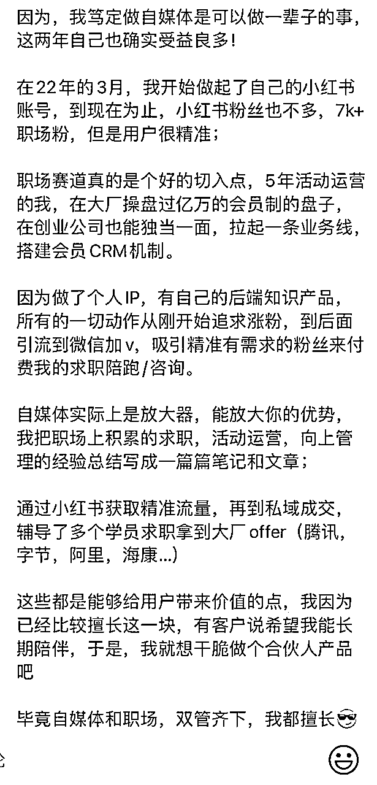
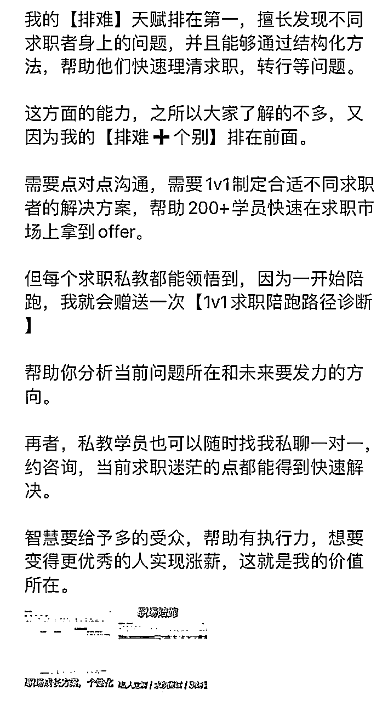
在写朋友圈的时候，我们可以挑选体现我们服务和课程质量的评论，好的反馈会是具体且情感丰富，也能够让其余的潜在用户感受到你的服务/课程带来的价值；
人们喜欢故事，尤其是能够引起共鸣的故事。尝试将学员对我们的反馈转化为一个个小故事，讲述他们在你的辅导下是如何克服困难、实现转变的。这种方式可以更生动、更感人地展示他们的反馈。
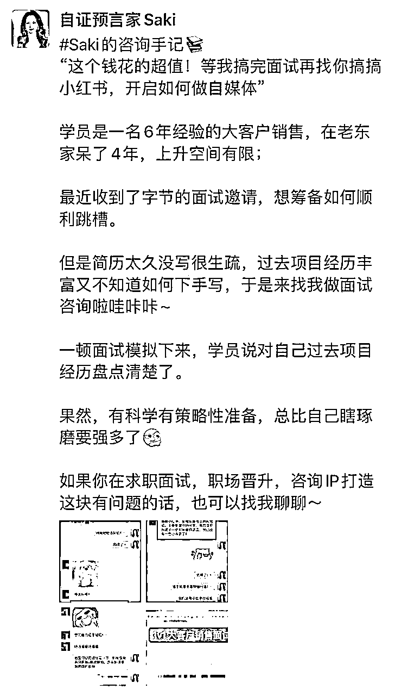
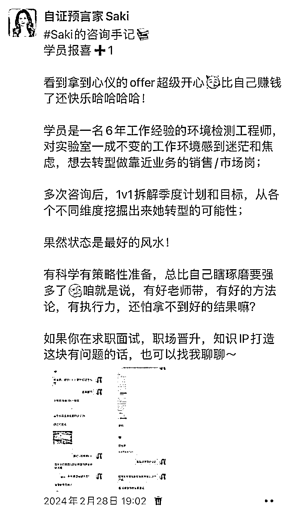
知识付费就像财神庙里的菩萨，只有用户说了好，才是显灵。
如何让潜在用户知道在你这里是有收获，有获得的，朋友圈要每天得去彰显你的交付过程，你的交付物料，用户证言，用户案例。
一个好的交付呈现，你得给想购买你产品的消费者看到什么呢？
首先，你得在朋友圈里体现，你的解决方案是系统，有方法论，有不同用户案例和方法论；
这证明了两点：
但凡找过工作的人都知道，求职并不是一个单点的事，而是一个系统的事，就像有的人找我修改简历这种活，我是不接的；
就算我接了，大概她收到面试邀约，自己不会针对目标岗位去进行准备，不会进行知识储备，大概率也会挂，其次，时时刻刻，在朋友圈针对你不同类型的用户去进行种草。
找我来做咨询/陪跑的用户有三类：
比如说，我的求职陪跑，那工作 0-1 年和 3-5 年，他们要跳槽写简历的话，那投递目标岗位也是不同的，面向问题也会不一样；
人最大的恐惧就是不确定性。
如果我的求职陪跑，可以给出课程、方法、行动路径、督促与情绪陪伴，那是很多导师都做不到的，再加上我懂教练技术，行动力也强，在自己有能量的时候，大多数学员很容易被带动起来。
先解决内心卡点，给行动路径，给里程碑目标，给内推资源，把确定性的东西可视化。
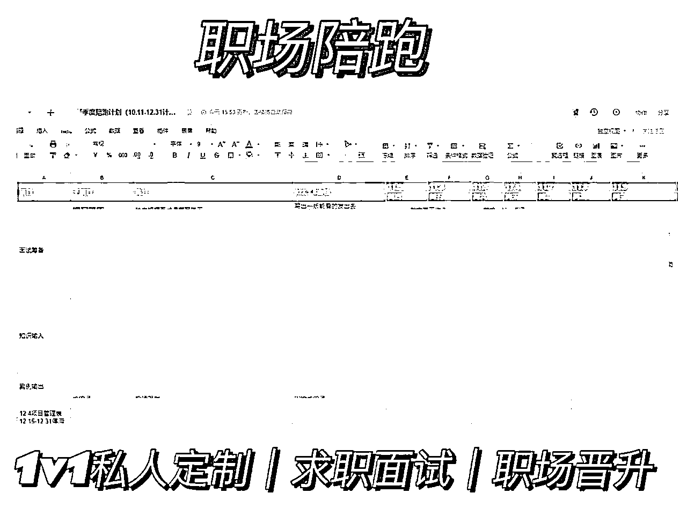
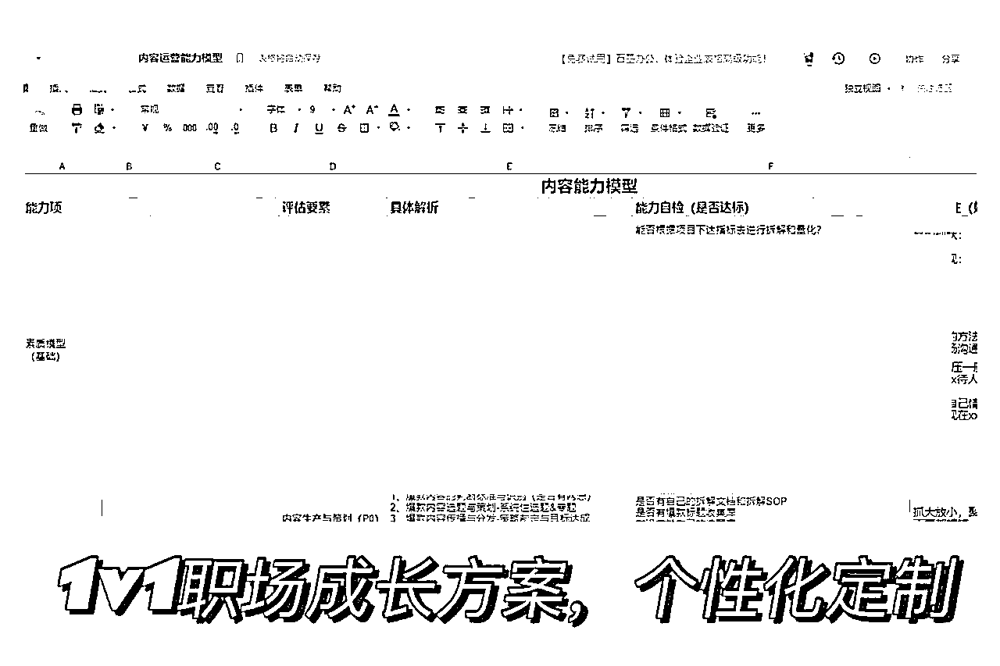
听话照做的人基本上不会过的太差，就算没有面试上特别理想的公司，面试能力也是个很重要的能力，只要你还在职场上呆着，那必不可少；
拥有选择权的前提永远是自己有能力和权利挑，面试也是如此，面试能力强+专业能力强+内推资源网好=王炸。
如果你陪伴用户走向一段生命历程阶段，她以前 vs 现在，从小白-主管-创业公司的负责人。
不同的阶段是有能力和心态的变化，毕竟小白和经理遇到的卡点不太一样；去写用户成长线的变化历程，正因为他有了变化之后，和之前大不一样，是不是更验证你交付的内容是可操作，可实现， 可落地的东西。
特别是教练，咨询师这种陪伴类的服务，你的差异化都藏在陪伴用户时间，帮助用户出成绩的过程中，个人性格特质，教练风格，咨询模式，和人息息相关是最难被复制的地方。
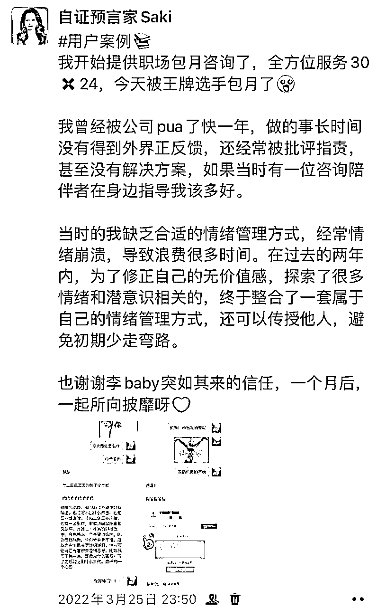
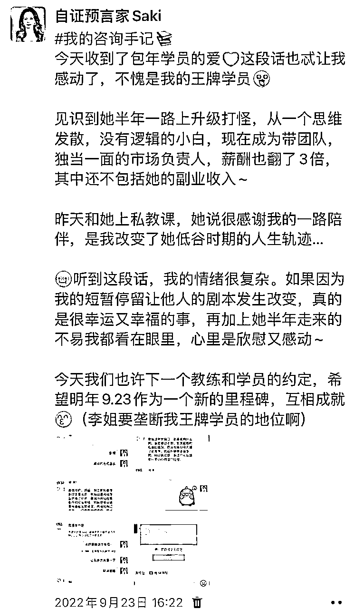
大家通过展示优秀学员的成功故事，可以有效地建立和增强潜在用户的信任感。
我之前的一个学员小A，在国企转行的痛苦，无法发挥自我优势的不如意，在他直播连麦的时候，被一个要跳槽的大客户销售听到了，通过他衔接到了我。
当潜在用户看到与他们类似背景或面临类似挑战的人通过使用某种服务或产品而取得显著成效时，他们更容易相信这些解决方案也能为他们带来同样的好处。
人都是需要认同感喂养的动物，当我看到你像我现在这么痛苦，并且已经走过了这个阶段的时候，我肯定想问问你是如何做到的，你的这个“药”在哪里买的，是找哪个“医生”看的。
就好比年轻漂亮的妹子想喇双眼皮，看到身边的朋友整形成功了，想问问在哪个医院做的是一个道理，这个优秀用户案例的呈现形式也有很多种，比如直播访谈、文章稿、小红书笔记案例等等。
如果你的用户交付没有内容，你很难会有对应的素材去产出一个道理，就像你没有输入，也 不会有啥输出的东西一样。
所以在给用户做交付，晒交付的过程，也是倒逼自己思考，我要给用户什么样的指导，他 们能出成绩，他们能动起来；
用户说产品好才是真的好，因为他们的评价最真实。产品再好，如果用户不认可，也没用。用户的反馈直接反映了产品的效果和体验，还能影响其他人的购买决策。用户好评说明产品满足了需求，解决了问题，从而建立了信任和忠诚度。
用户对你的新产品还没有正式推广前就付费，说明他们对你的交付口碑认可且相信你，认为新品能够满足他们的需求。
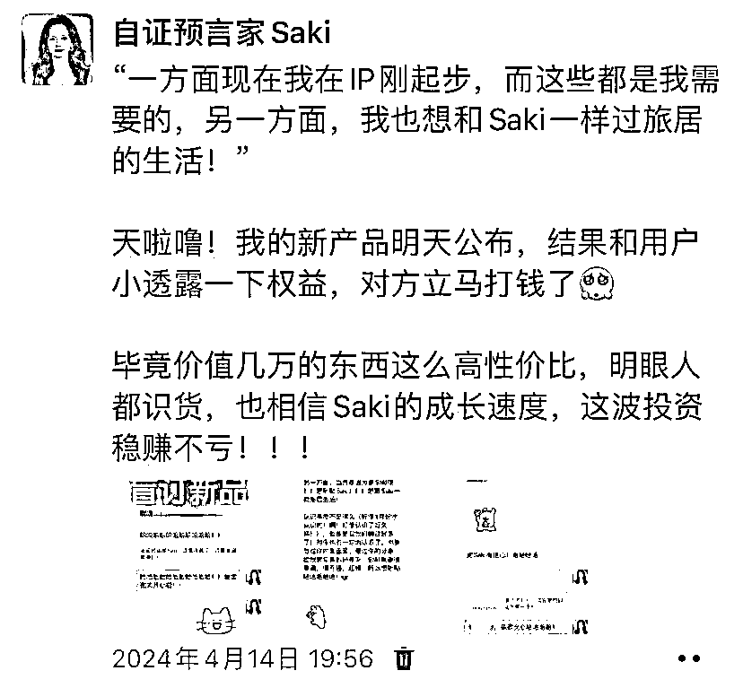
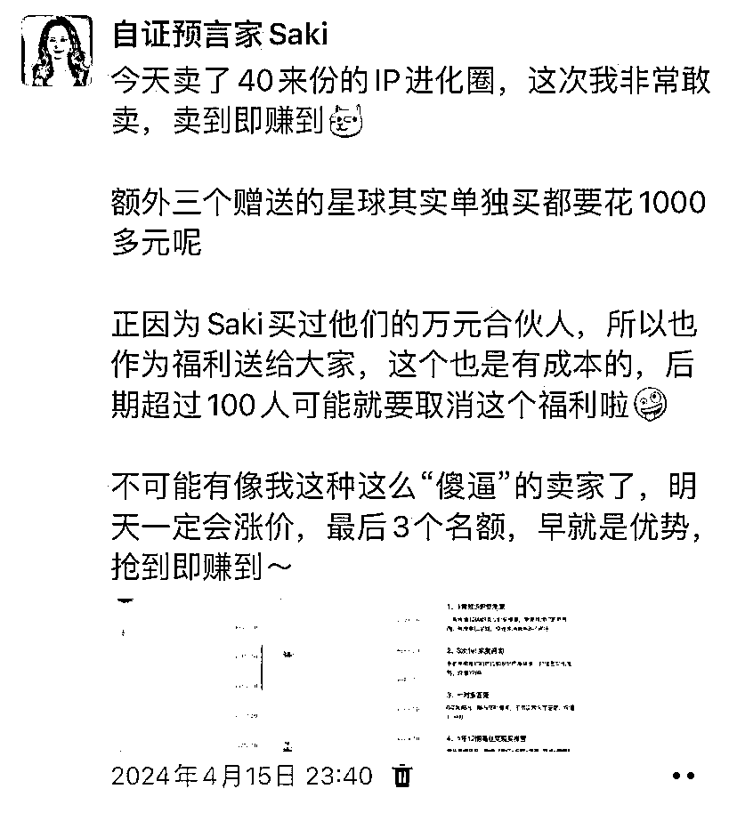
比如像我的高客单价，职场陪跑产品，都是6000以上的。每年续费的用户对它的产品价值高度认可，认为我提供的职场陪跑服务确实可以帮到他，能够让她进步好几个level。
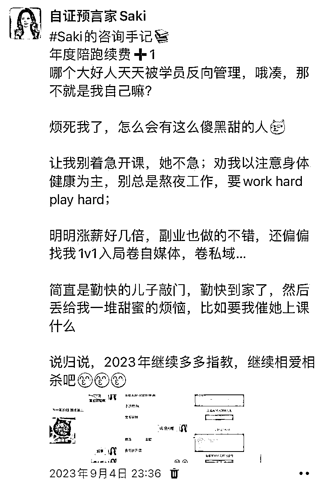
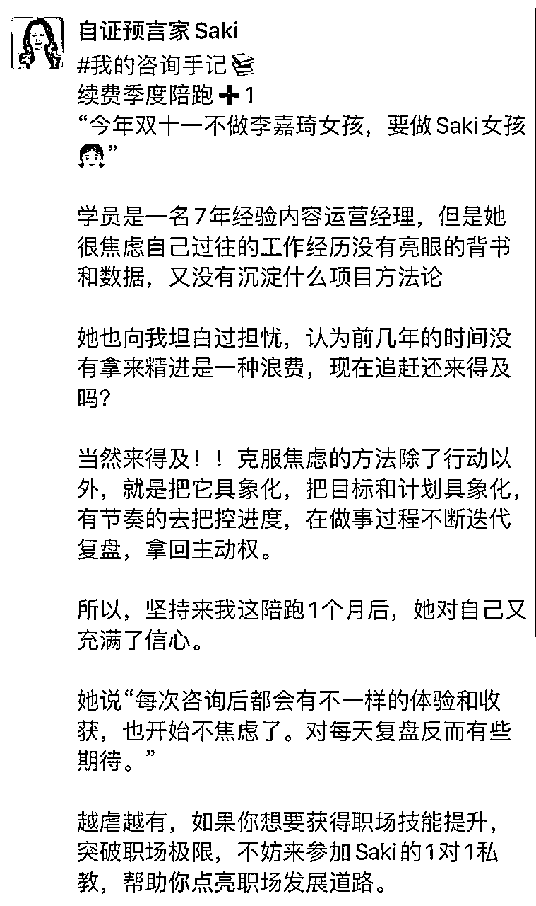
自己是什么样的风格、有什么原则要时刻渗透在朋友圈里，我会强调自己是个给方法，能够带你有效做出行动和改变的老师。对也是一定的要求的，我可以给你改内容，可以给你指导；但是你不能不做，不能只是伸手，知识不值钱，改变和行动才值钱。
大家一定要在平时宣传的用户交付物料、用户案例、直播风格去软植入自己的框架和原则，不同的用户基于海报和给钱的时候，我承诺的交付是一致的，绝对不会奖惩错逆；
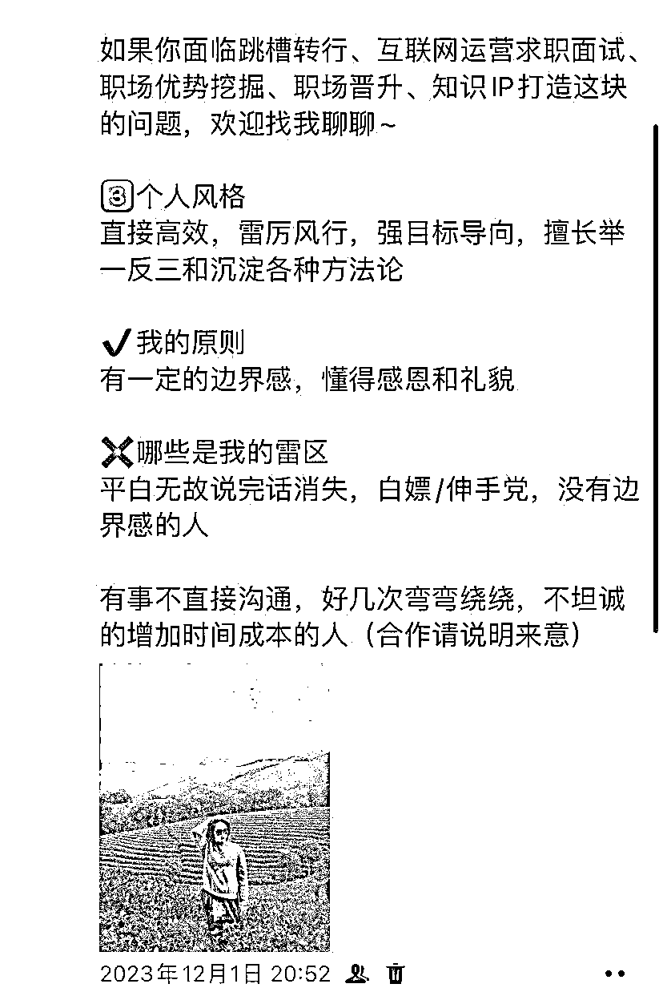
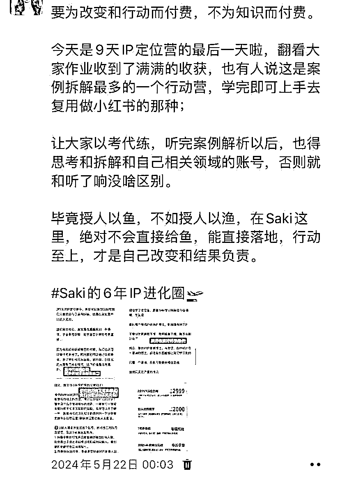
如果朋友圈里的用户想购买我的职场陪跑，我通常都是卖6000季度陪跑/9000年度陪跑。
在正式开始前，我会收取一次单次咨询费用，让客户填个详细的咨询问卷，包括他们的工作背景、遇到的难题，还有他们希望通过我的服务达到什么样的目标。这样我就能更有的放矢，准备得更充分。
同时也会告诉对方，这次是双向筛选，让我们彼此之间熟悉下风格，判断是否是合适的人，来看看用户的改变的意愿、动机是否强，我所提供的服务是否能够真的帮助到他。
在聊的过程中，我会发现，有的求职用户一开始的诉求只是想改改简历，然后辅导一下大厂的面试；他明明有很强的工作能力，但是但是不会包装自己，不会表达自己，错失了很多心仪的工作机会。眼看能力比他弱的人拿到了好offer，就很郁闷。
这是很多上班族都会遇到的问题—工作经历很丰富，但写不出来，也不知道如何结合意向岗位针对性撰写简历，导致求职岗位不匹配，被pass，与心仪公司失之交臂。
但实际上，简历润色并不能真正帮到你多少，大部分人是从“根"上就没搞清楚求职一个好的岗位到底需雯筹备什么。怎么根据岗位能力模型去写简历，怎么去结构化筹备面试，拿到目标offer，拿到offer后，如何去选择?怎么度过试用期?
这些问题一旦考虑不清楚，你整个人就是浮的。
这时候再去改简历，就算拿到了公司的面请机会，也是会很焦虑，自己要面试上了，也担心德不配位怎么办?
在这个时候，我就询问预期+肯定想法+诊断痛点+提供大方向解决方案。
“哇，那宝子的目标是想找什么样的岗位呀，预期薪水在多少区间呢？“
“那这个想法不错呀，你觉得自己的简历目前能够优化哪些部分，准备怎么优化？“
“简历确实很重要哈，有些人的简历值八千，有些人的简历值一万五，但是他们的经历差不多，以我辅导过的这么多案例，你的项目经历起码能要到20k的工资，难就难在你不愿意相信和行动。”
“你的预期薪资大概在2w的话，那应该需要简历修改＋面试辅导＋面试模拟＋面试复盘+如何和HR谈判薪水+如何挑选最好最合适你的offer；
如果你现在报名了季度先帮你梳理求职目标和岗位一敲定好3个月的求职计别一规创出转正的路径一再根据目前的欠缺补面试技能，补岗位技离，和上下级沟通方式等“
如果用户回复说：“好的，我考虑考虑。“的话，这个时候我会约定一个回访和福利保留的时间，比如说：”如果是预算的问题的话，也没关系，不要有太多的压力，如果这三天内下单的话，会给你xx福利“
等我们到时间去回访用户的时候，也千万不要开口就是一句：“你要不要啊？”“你考虑得怎么样了啊？”这种问题让人压力山大也很反感，没有人喜欢被逼迫。
那约定好时间的回访，我们可以从哪些维度上去推进呢？
提供大方向解决方案+放大痛点和好处+留下钩子
”小宝，昨天和你沟通完后，我想了下，你现在的工作项目经历其实没问题的，我建议先把简历润色修改了，你现在的项目成果在简历上没有看出来过往的出色，如果没有好好把简历对应你意向的目标岗位修改好的话，就很容易在初筛的时候被筛下来”
“但如果你现在把简历的内容优化好了，起码是争取到公司的面试机会，当你面试能力也跟上来后，你的面试offer通过率就会越来越高了“
“我这里有一份高频面试问题100问，你要的话我发给你参考”
然后等着对方回复，如果不回复的话，也不是我们的意向用户，那就拜拜，下一个客户继续。
总结一下，7k变现20w净利润的关键点：